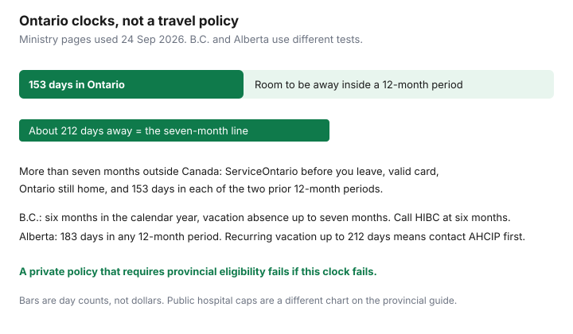

Insurance · Canada
Snowbird Travel Insurance in Canada: Pre-Existing Conditions, Stability Periods, and OHIP Residency
A cheap snowbird policy fails in two places: the provincial health plan that lapsed because the winter was too long, and a stability clause that excludes the condition you actually have. The premium difference between brands is smaller than the difference between a contract that covers a 120-day stay with your medications unchanged and one that does not. This page is the calendar and the certificate. Daily public hospital caps — OHIP’s $50, $200, and $400 — are already on the provincial travel-medical guide. They are not repeated here as if they were a travel policy.
Disclosure: Travel medical policies are an offer type. Saving Optimizer may earn a commission if we later add partner links. We do not currently claim a travel-insurer partnership. We do not sell policies and we do not rank brands. Residency rules below were read from provincial pages on 24 Sep 2026. Confirm them before you book the flight.
Key takeaways
- Ontario: be physically present at least 153 days in any 12-month period. An absence outside Canada of more than seven months needs a ServiceOntario visit before you leave if you want to keep OHIP for up to two years, and you must have been in Ontario 153 days in each of the two previous 12-month periods.
- British Columbia’s vacation absence can run to seven months in a calendar year; six months or more means calling Health Insurance BC. Alberta expects 183 days in the province in a 12-month period and tells recurring vacationers to ask before a long winter.
- Stability is a definition in the contract, often 90, 180, or 365 days. A medication change can restart it. Answer the questionnaire to the wording, not to how you feel today.
- An annual multi-trip plan with a short day cap does not cover a winter. Match the contract to the nights you will actually be away, and renew before departure.
- Deductible and maximum move the price more than the logo. Only raise a deductible you can pay in cash while a U.S. bill is still open.
Residency day-count rules so you do not lose provincial coverage on long US stays
Private travel medical sold to Canadians commonly requires you to be covered by your provincial plan for the whole trip. A long U.S. stay can break that requirement even when you still own a house in Canada. Ontario is the worked example. Other provinces are not copies of it.
| Province | Rule to copy onto a calendar | Before a long winter |
|---|---|---|
| Ontario (OHIP) | Physically present in Ontario at least 153 days in any 12-month period, Ontario still your primary home, valid card. The apply-for-OHIP page says an absence of more than 212 days in any 12-month period can mean you must reapply. | Outside Canada more than seven months in any 12-month period: you can keep coverage for up to two years only if you have a valid card, Ontario is still home, and you were in Ontario at least 153 days in each of the two 12-month periods before departure. Take the card and proof of residency to ServiceOntario before you leave. The change-of-information form describes a vacation exemption of up to two years. |
| British Columbia (MSP) | A resident makes a home in B.C. and is physically present at least six months in a calendar year. Citizens and permanent residents on vacation may be allowed a total absence of up to seven months in a calendar year. | Away six months or more in a calendar year: contact Health Insurance BC first. An extended absence of up to 24 consecutive months, once in 60 months, has extra conditions, including not using the seven-month vacation rule in the year it starts or the prior calendar year, and not returning for more than 30 consecutive days during that extended absence. |
| Alberta (AHCIP) | Permanent home in Alberta and physically present at least 183 days in any 12-month period. Ordinary travel: outside Canada for less than six consecutive months, or in another province for less than 12 consecutive months, then return to that home. | Recurring vacation absences of up to 212 days in a 12-month period may still qualify. Alberta’s page says to contact AHCIP before you leave if you will not meet the 183-day presence test. Do not inform them after the season. |

Count nights, not “we’re only gone for the winter.” A departure on 1 October and a return on 15 May is 226 days, past the 212-day line. Two shorter trips in the same 12-month window can add up to the same problem. If a private policy requires provincial eligibility and the ministry later says you were away too long, both layers can fail. The out-of-country hospital caps on the provincial guide are available only while you are still eligible.
Stability periods and medical questionnaires—answer precisely
Stability is not “I feel fine” and it is not a doctor’s casual note unless the wording accepts that note. The certificate defines a pre-existing condition and the number of days it must be stable before departure. Canadian contracts commonly use 90, 180, or 365 days. Those numbers are not a statute. The definition of stable is usually some version of: no new diagnosis, no change in treatment or medication, no new symptom, no test result you have not received, and you have not been told to see a specialist.
- A dose change counts when the wording says it counts. Switching from 10 mg to 20 mg, or stopping a drug, can restart the clock even if you feel better.
- A pending test is not stable. If you are waiting on a scan or a biopsy, say so. Buying the policy and hoping the result is normal is how claims are denied.
- Answer the medical questionnaire to the question asked. A “yes” is often an underwriting step, not an automatic decline. A false “no” is a denied claim and, in serious cases, a voided contract. If you do not remember a date, get it from the pharmacy or the clinic before you sign.
- Each person is underwritten. One partner’s stent does not exclude the other person’s ankle, and it does not let you hide the stent on a joint application.
If you cannot meet the stability window, look for a contract that will cover the condition with a higher premium or a waiver, or do not travel on the assumption you are covered. A policy that excludes the condition you are travelling with is not a bargain.
Multi-trip annual vs single-trip math for winter absences
Annual multi-trip and single-trip solve different calendars. The day cap on an annual plan is the longest single absence, not the total of all trips, unless the wording says otherwise. Snowbird winters break short caps.
| Pattern | Contract that fits | Where people get caught |
|---|---|---|
| Four trips of 10 days, home between each | Annual multi-trip with a trip limit of at least 15 days, if each absence is a separate trip under the definition. | A “trip” that never returned home is one long trip. The 15-day cap then stops on day 16. |
| One stay of 120 to 180 days | A single-trip plan for those dates, or an annual plan whose trip limit covers the whole stay, or a top-up that starts before the annual cap with no uninsured day. | Buying a 15-day annual plan because it was cheap, then discovering day 16 in Arizona is uninsured. A top-up bought after the cap has started may exclude the condition that appeared in the gap. |
| A long winter plus two short trips later | Price a single-trip for the winter and a separate annual plan for the short trips. Also price one contract that covers both. Take the lower total only if the stability and maximum match. | Paying for an annual plan and a top-up that together cost more than one winter policy, with two assistance numbers to call. |
Age bands step the price, often around 60, 65, 70, and older. If a birthday falls during the winter, ask which band applies on the departure date and what happens if you extend. A couple does not have to share one certificate. The older traveller often should be priced alone so the younger one is not dragged into that band.
Deductible and maximum choices that change premium more than brand names
On a like-for-like winter, the levers that move the premium are the ones in the certificate, not the brand on the banner.
- Maximum. U.S. facility bills are why households compare certificates in the millions for a long stay. A low cap is a different product. Write the medical maximum and any lower sub-limit for a single condition.
- Deductible. Per trip, per person, or per condition, and in which currency. Moving from $0 to a deductible you can pay will usually cut the premium more than switching logos at the same deductible. A $5,000 or $10,000 deductible is only rational if that cash is liquid. The hospital may want a deposit before the insurer reimburses you.
- Days and stability. Shortening the trip on the application to get a price, then staying longer, leaves the extra days bare. A shorter stability window that you do not meet is not a discount. It is an exclusion.
- Add-ons that are already in a good medical maximum. Trip cancellation and baggage are different contracts. Do not let a bundle obscure a weak medical cap. Read cancellation rules if you care about them; they are not a substitute for medical.
Get two written quotes on the same maximum, deductible, days, and stability definition. Travel-medical quote flows are an offer type. We are not naming a winner.
Coordinate with US snowbird clinics and prescription needs
Provincial drug plans generally do not follow you to a U.S. pharmacy. The provincial travel-medical guide covers that gap. For a winter stay, do the practical coordination before you go.
- Ask the pharmacist for a supply that covers the dates, within what they are allowed to dispense. Carry a list of generic names, doses, and the prescribing physician.
- Put the assistance phone number, policy number, and a photo of the health card where someone else can open them. U.S. clinics often want a guarantee of payment from the assistance company. Call before care that is not a true emergency, and as soon as someone can after an emergency admission. The hour limit is on your certificate.
- A snowbird clinic visit for a flare of a known condition is exactly where stability and “not an emergency” wording meet. Ask assistance whether they will direct care. Do not assume a walk-in is covered because you have a card in your wallet.
- Coming home with medication is a border question. Use the pharmacist and the Canada Border Services Agency rules for personal imports. This page is not a way to bring back a stockpile.
If you need a U.S. prescription because you ran out, expect to pay it and then read whether the travel policy reimburses drugs at all, and at what sub-limit. Many medical certificates cover drugs that are part of emergency treatment and exclude a routine refill.
Calendar renewal before departure; gaps happen when policies lapse mid-season
Buy and renew while you are still in Canada, before the departure date on the application. A policy that expires on 15 January while you are in Arizona is a gap even if you “meant to renew.” Many insurers will not start a new contract once you have left, or they will exclude a condition that began on the trip. Extending on 14 January, under the extension rules of the contract you already hold, is the clean path. If the extension requires you to be in good health on that day, a flare-up can block it. That is why the original contract should cover the planned return date, with a small buffer, rather than a mid-winter hope.
- Put the policy expiry on the same calendar as the annual insurance review. The house renewal and the snowbird expiry are both dates, not moods.
- If you use a credit-card certificate for the flight down and a standalone policy for the winter, read both “other insurance” clauses. The certificate guide is the method. Card benefits often cap trip length far below a snowbird stay.
- Keep proof you were eligible for the provincial plan: the ServiceOntario or Health Insurance BC or AHCIP confirmation if you needed one, boarding passes, and the dates you were home. Coordination paperwork asks for it.
A lapse mid-season is not fixed by buying something on a phone in a clinic parking lot. Do the paperwork in October.
Sources & date stamps
- Ontario Ministry of Health, OHIP coverage while outside Canada — seven-month absence, 153-day test in each of the two prior 12-month periods, ServiceOntario visit before departure. Page updated 16 Jan 2026; used 24 Sep 2026.
- Ontario, apply for OHIP — 153 days in any 12-month period; more than 212 days away can mean reapplying. Used 24 Sep 2026.
- Province of British Columbia, eligibility for MSP and leaving B.C. temporarily — six months’ presence, seven-month vacation absence, extended absence up to 24 months once in 60 months. Used 24 Sep 2026.
- Alberta.ca, AHCIP eligibility and absence from Alberta — 183 days in any 12-month period; outside Canada under six consecutive months; recurring vacation up to 212 days, contact AHCIP first. Used 24 Sep 2026.
- Daily public hospital caps and Assuris health-expense protection are on the provincial travel-medical guide, read 23 Sep 2026 and not restated as if they were snowbird premiums.
Frequently asked questions
How long can an Ontario snowbird be away without losing OHIP?
You generally need 153 days in Ontario in any 12-month period. More than seven months outside Canada in a 12-month period requires a ServiceOntario visit before you leave, a valid card, Ontario as your primary home, and 153 days in the province in each of the two previous 12-month periods, if you want to keep coverage for up to two years. The page used here was updated 16 January 2026 and re-read 24 September 2026.
Does British Columbia use the same 153-day test?
No. MSP uses a calendar-year test: generally six months of physical presence, with a vacation absence of up to seven months for eligible residents. An absence of six months or more means contacting Health Insurance BC. Extended absences of up to 24 months are a separate approval with their own conditions.
What is a stability period?
It is the number of days a pre-existing condition must meet the policy’s definition of stable before you leave. Contracts often say 90, 180, or 365 days. A change in medication or a pending test can fail the definition. Answer the questionnaire precisely.
Is an annual multi-trip plan enough for a five-month winter?
Only if its maximum trip length covers the whole absence. A 15- or 30-day annual cap does not. A single-trip plan for the winter, or a top-up with no uninsured day, is the comparison to run.
Is this insurance advice?
No. Education only. Travel medical policies are an offer type. We do not claim a partnership with any insurer.